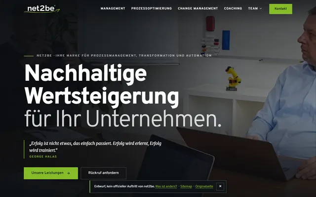

Start / Über diesen Entwurf
Über diesen Entwurf.
Ein Vorschlag, wie schnitzler-und-partner.eu aussehen könnte: dieselben Inhalte, neu gebaut, leichter und für Suche und KI besser lesbar.
Ihre Inhalte, neu gebaut. Alle acht Seiten von schnitzler-und-partner.eu stehen hier neu, Impressum und Datenschutzhinweis im Wortlaut. Alle 53 Blogbeiträge und 28 Medienberichte sind verzeichnet, die sechs neuesten Beiträge als eigene Seiten. Ich habe nichts erfunden; wo neue Wegweiser stehen, sind sie unten als Vorschlag genannt.
Rund 19-mal leichter: Die Startseite lädt rund 0,4 MB statt rund 7,5 MB. Der größte Posten im Bestand ist das Titelbild mit 4,9 MB.
Für Google und KI-Assistenten lesbar: Kanzlei, Partner, Öffnungszeiten, Leistungen, die Stellenanzeige und die Blogbeiträge stehen jetzt als strukturierte Daten im Code. Im Bestand gibt es keine, und alle Seiten tragen dieselbe Beschreibung für Suchmaschinen.
Keine fremden Server beim Laden: Der Entwurf lädt nur eigene Dateien. Der DATEV-Film kommt erst auf Klick, direkt von Ihrem Server.
Ihre Marke bleibt: Kanzleiblau, Logo, die Schriften und das Signet „Digitale Kanzlei 2023“ sind übernommen. Neu ist die Doppellinie von Ihrem Kanzleischild als wiederkehrendes Zeichen.
Bitte beachten
Unverbindlicher Entwurf, für Suchmaschinen gesperrt, ausschließlich aus öffentlich verfügbaren Inhalten und Bildern von schnitzler-und-partner.eu. Keine Verbindung zum offiziellen Auftritt, keine Konkurrenz zum Original, auf Wunsch jederzeit entfernbar.
Wo dieser Entwurf steht.
Von der einfachen Ein-Seiten-Lösung bis zur High-End-Plattform. Danach richten sich Aufwand und Preis. Die Einordnung ist meine Einschätzung.
0-1 einfache Seite, ohne Unterseiten und Formulare~5 mehrseitiger Auftritt: Formular, SEO und GEO, Mediengalerie, News10 All-In: Online-Buchung, CMS, Login, KI-Assistent, Analytics
Dieser Entwurf
Ihr Bestand, neu gebaut
Meine Empfehlung
012345678910
- Dieser Entwurf (~3,5): 19 Seiten mit allen Inhalten, Rechtstexte im Wortlaut, strukturierte Daten; sechs Beiträge als eigene Seiten, das Formular öffnet das E-Mail-Programm.
- Ihr Bestand, neu gebaut (~5): dazu ein Redaktionssystem für den Blog mit allen 53 Beiträgen, so wie Ihr heutiges System Beiträge verwaltet.
- Meine Empfehlung (~6): Blog mit Redaktionssystem, angebundenes Kontaktformular mit Spamschutz und Weiterleitungen aller alten Adressen auf die neuen.
- 8 bis 10 sind der nächste Horizont, kein Rückstand: etwa ein sicherer Upload für Belege, ein KI-Assistent für erste Fragen oder eine datensparsame Besucherstatistik.
Was der Entwurf anders macht.
| Merkmal | Bisherige Seite | Dieser Entwurf |
|---|---|---|
| Technik | CMS Made Simple, Vorlage „Spectral“, 8 Skripte | reines HTML, CSS und ein Skript |
| Einstieg | Vollbild ohne Überschrift, „Treten Sie ein“ | Teamfoto, Kernsatz und Telefonnummer auf einen Blick |
| Überschriften | Hauptüberschrift ist das Logo-Bild | genau eine Hauptüberschrift je Seite, als Text |
| Beschreibung für Suchmaschinen | auf allen Seiten dieselbe | eigene je Seite |
| Strukturierte Daten | keine | Kanzlei, Partner, Öffnungszeiten, Leistungen, Stelle, Beiträge |
| Blog | 53 Kacheln auf der Startseite | eigene Seite nach Jahren, die sechs neuesten auf der Startseite |
| Social-Vorschau | kein Vorschaubild | eigenes Bild je Seitenart |
| Kontakt | Telefon und E-Mail, kein Formular | dazu ein Formular und ein Lageplan mit Route |
| Mobil | Menü der Vorlage | Glasmenü, Wischen nach rechts schließt |
Gemessen, nicht geschätzt.
Startseite, gemessen am 17.11.2026 im Browser bei 1440 px Breite, jeweils bis zum Laden plus drei Sekunden. Der Entwurf lief dabei auf einem Testserver ohne Komprimierung; im Livebetrieb wird er eher leichter.
7,5 → 0,4MB beim Laden der Startseite
8 → 1Skripte
2 → 1Server, von denen geladen wird
0 → 5Datensätze für Suche und KI
Sorgenfrei umstellen
Ihre Seite läuft heute auf CMS Made Simple bei DomainFactory, mit einer vorgeschalteten Schutzschicht. Der neue Auftritt läuft zuerst parallel als Vorschau. Die bestehende Seite bleibt unangetastet, wird vollständig gesichert und ist auch nach der Umstellung jederzeit wiederherstellbar.
Ihre Marke bleibt.
Das Kanzleiblau bleibt die Hauptfarbe. Dazu kommt ein tiefes Nachtblau für ruhige Flächen und das helle Azur der Doppellinie von Ihrem Kanzleischild. Die Schriften sind dieselben wie bisher.
Kanzleiblau#215894, Hauptfarbe
Nachtblau#14273d, Flächen, im Fuß eine Stufe dunkler
Azur#4a9be0, Doppellinie
Himmel#bcd6f2, Schrift auf Dunkel
Papier#f5f4f0, Grund
Stein#e7e9ec, Fläche
EB GaramondÜberschriften: eine Schrift mit kleinen Häkchen an den Buchstaben, ruhig und klassisch. Schon bisher Ihre Schrift für Überschriften.
Open SansText: ohne Häkchen, gut lesbar auch klein am Handy. Schon bisher Ihre Schrift für Fließtext.
Warum gerade ich.
Fester Preis
Keine Überraschungen. Fest heißt fest.
Ein Ansprechpartner
Weder anonyme Großagentur mit langen Wegen noch Gelegenheitsanbieter. Alles aus einer Hand, aus Mönchengladbach.
Wächst mit Ihnen
Formular, Blog, KI-Assistent: in Stufen, von kostenfrei bis zu einer kleinen Monatsgebühr.
Die Seite gehört Ihnen
Volle Nutzungsrechte, kein Abo-Zwang, kein Nachverkauf durch die Hintertür.
Kein Einzelfall.


Bis zum Livegang.
- Logo als Vektordatei: Im Bestand liegt das Logo nur als kleines Bild mit 164 Pixeln Breite. Für scharfe Darstellung auf allen Geräten brauche ich die Originaldatei.
- Blog vollständig: alle 53 Beiträge übernehmen, auf Wunsch mit einem Redaktionssystem, in dem Sie neue Beiträge selbst einstellen.
- Formular anbinden: Das Kontaktformular ist neu und ein Vorschlag. Im Livebetrieb geht es an Ihr Postfach, mit Spamschutz.
- Texte prüfen: Die Mandantenzeitung kündigt die nächste Ausgabe für Frühjahr 2026 an. Die Teamgröße steht als „rund 35“, „mehr als 30“ und mit 24 Porträts. Die Bewerbungshinweise nennen die Postleitzahl 41239, das Impressum 41238. Die Initiativbewerbung duzt im letzten Satz, alle anderen Seiten siezen. Zwei Presse-PDFs sind im Bestand nicht abrufbar. Ich habe den Wortlaut gelassen und nur Ausrufezeichen in zwei Überschriften durch Punkte ersetzt.
- Neue Wegweiser freigeben: Einige kurze Texte sind neu, damit der Besucher sich zurechtfindet: die Überschriften der Startseite wie „Wofür Sie uns brauchen“, die drei Sätze im Band „Sie - Wir - Lösungen“ und die Kurztexte der Kompetenz-Kacheln. Bitte einmal lesen und freigeben oder ändern.
- Menü: „Service“ steht wie im Bestand unter „Karriere“. Mein Vorschlag wäre ein eigener Menüpunkt für Mandanten. Blog und Medien haben jetzt eigene Seiten.
- Rechtstexte und Umzug: Impressum und Datenschutzhinweis stehen im Wortlaut des Bestands und brauchen vor dem Livegang einen Blick auf die Dienste, die im neuen Auftritt nicht mehr laufen. Dann alte Adressen weiterleiten und die Seite für Suchmaschinen freigeben.
Was ist das hier? Ein Entwurf von Dr.-Ing. Suat Akyol, Inhalte und Bilder aus dem Bestand von schnitzler-und-partner.eu. Anmerkungen gern an contact@akyol.de.